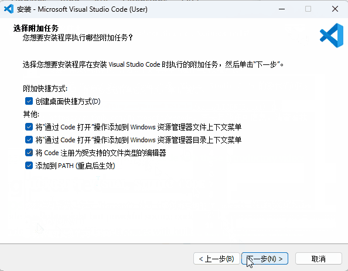
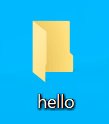
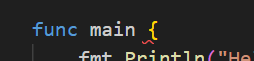
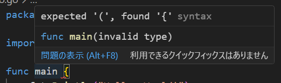
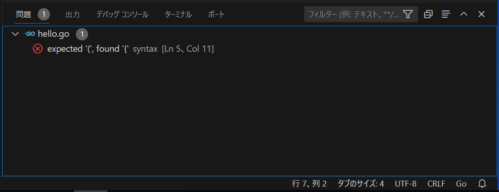
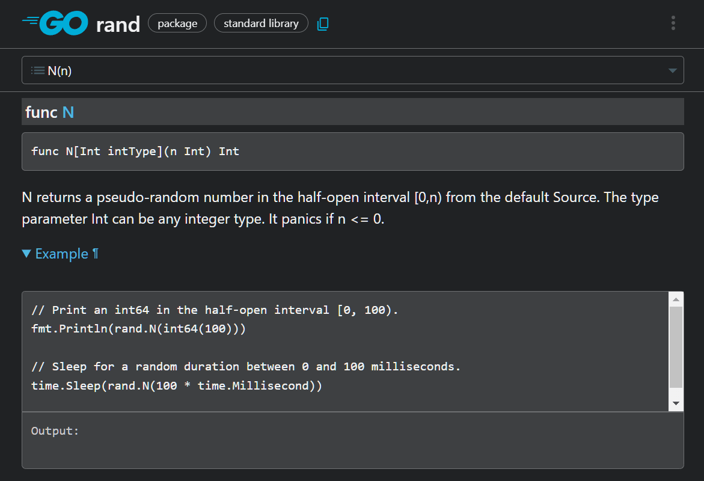

第一章 关于这本书

1.1 引言
欢迎来到《从零开始的游戏编程：Go 语言与 Ebitengine》。
本书旨在为完全没有编程经验的超初学者提供指导，以“连老妈都能理解”为目标，循序渐进讲解如何从零开始制作游戏。
希望通过本书，让你体会到游戏编程的乐趣。在这本书中，我们将最快的路线，从编程基础走到游戏开发。
· 极其易懂、细致解说如何配置编程环境
· 一边让画面动，一边学习编程
· 学习制作各种类型的游戏，都能用到的泛用技术
以上就是我们的目标。如果读者里面有：
· 环境构建太难搞，总是半途而废
· 黑窗口好无聊，啥时候才能有画面
· 我学的东西，真的对制作游戏有帮助吗
如果你这样想，恭喜，这本书正好适合你。另外本书还推荐给那些“游戏引擎很卡，在我的破电脑上跑不起来”的人。
笔者入门游戏编程，用的是名为 BASIC 的古老编程语言。尽管 BASIC 仍然是一种伟大的语言，但与现代游戏开发相距甚远。
在现代，能够实现前面这些这些宏伟目标的东西，笔者认为除了本书中提到的 Go 语言和 Ebitengine，可以说别无他选。
如果有人因此一辈子用 Go 和 Ebitengine 制作游戏，那将是无上的喜悦。但即使不是这样（也就是说，用其他引擎制作游戏或没去做游戏方面的编程），我也相信在这里学到的知识，一定会对你有所帮助。
我虽然说了很多，但如果您能当作轻松的业余消遣来读，相信也一定会很有趣😉
1.2 这本书的使用方法
这本书不仅可以在 PC 上阅读，也可以在手机上阅读。不过，实际编程需要用 Windows PC 或 Mac。
虽然（日文版）没有 Zenn 的账户也可以阅读，但如果登录 Zenn 账户，则会有阅读进度记录等功能，因此推荐注册。
动作确认是在 Windows 10 和 macOS Ventura 上进行的。如果有任何问题，请在以下社群中告知我们。
1.3 关于编程社群
您可以在 Ebitengine 官方 Discord 服务器的 #questions-ja 频道中，直接向作者 @eihigh 询问。 任何小问题都非常欢迎！
此外，我们还不定期举办轻松的学习交流会“Ebitengine ぷちConf”，最近的一次在 8 月 30 日举行。
详情请点击这里。欢迎初学者参加，请随时加入我们！
1.4 请您给予支持
全编免费阅读，但如果您从（日文版）书籍目录画面下方的“徽章（バッジ）”处给作者打赏，作者会非常高兴！
1.5 其他学习资料
学习 Go 语言的资料，除了这本书之外还有很多选择。以下是其中的一部分，希望对您有所帮助。
GO指南
A Tour of Go 是 Go 官方提供的学习内容（链接是由志愿者翻译的中文版）。 它的特点，是可以使用后面提到的 Go Playground 的功能，一边在左侧阅读解说，一边在右侧编写并即时运行。 虽然有些内容假设读者有其他语言的编程经验，但依然是快速掌握 Go 的绝佳选择。

Go Playground
Go Playground 是 Go 官方提供的代码执行环境。可以在浏览器上编写并执行，或通过 Share 按钮发布 URL，共享编写的代码片段。
不过由于 Go Playground 无法响应用户输入，因此不适合做游戏。适合快速检查语法或共享代码片段。

Go语言编程 完全入门（日语资料）
《Go语言编程 完全入门》是由致力于 Go 普及的 tenntenn 先生编写的学习内容。
内容面向初学者，并且附有实际动手学习的实践环节，非常易于理解，推荐阅读。

1.6 学习时的注意事项
因为 Go 始终在不断发展，某些教程可能因为信息过时而导致“照着做却不成功！”的情况发生。这本书也不例外，所以请尽量参考最新信息。
1.7 编程是什么，游戏编程是什么
程序究竟是什么？我将尝试以老妈也能理解的方式解释。
程序是指示计算机执行操作的工具。例如，编写指示计算机“按顺序显示 1 到 10 的数字”的程序，计算机就会按顺序显示 1 到 10 的数字。
个人电脑、智能手机、游戏机等，所有计算机都由程序控制。如果没有程序，计算机就只是一个空壳。
游戏编程，就是在编写作为游戏运行的程序。将图像显示在屏幕上、发出声音、对输入作出反应、移动角色等，这些都由程序控制与运行。
此外，游戏编程的范围，不仅限于我们手头的电脑、手机和游戏机上运行的程序——
互联网某处的“游戏服务器”、为游戏开发者提供的“辅助工具”、以及被各种游戏使用、支撑开发的“游戏引擎”等等，游戏编程涉及多个领域，在这里我们不扩展讨论了。
不过，现代游戏中这些内容都是不可或缺的，因此有意将游戏编程作为职业的人，建议您保持好奇心并积极学习。
在这个连载中，我们将从零开始学习游戏编程。请务必体验一下从无到有，写出一款游戏的感觉。
1.8 Go 语言与 Ebitengine 概述
在本连载中，我将简要介绍将要使用的技术。对技术话题感兴趣的读者可以阅读一下。
Go 语言是 2009 年正式发布的相对年轻的编程语言。具有语法简单、环境搭建轻松、像脚本语言一样容易执行这样的“易用性”，与可以快速编译与执行速度快这样的“高性能”等特点。
这种语言，还因由 C 语言的发源地贝尔实验室的资深程序员开发而闻名，Go 语言一方面保留了 C 语言的特征，但在吸取 C 语言的经验和教训的基础上，去除了复杂性，是一种现代化的编程语言。
Go 主要用于 Web 与云服务领域，但 Go 当然也可以制作游戏。在这里，我们将使用 Go 加 Ebitengine 这个库（库：为了让大家分享，而编写的通用游戏组件）来制作游戏。
Ebitengine（エビテンジン）是由日本人星一（Hajime Hoshi）开发的一个用 Go 开发游戏的库。
它支撑了许多著名的作品，如《梅格与怪物》、《熊先生的餐厅》，以及备受期待的新作《SAEKO: Giantess Dating Sim》。 游戏特点与 Go 的特性有很多共同之处，比如简单易用，运行速度快。
Ebitengine 的另一个值得大书特书的特点，就是其支持平台范围广了。
它不仅支持 Windows、macOS、Linux 等桌面环境，还支持使用WebGL在 Web 浏览器上运行 ，以及发布成为 iOS 和 Android 上的智能手机应用，甚至还能移植到 Nintendo Switch 和 Xbox 这些主机上。
它让用 Go 语言编写的游戏，可以轻松移植到各种平台。
Ebitengine 官方网站上发布了大量游戏示例，在浏览器上展示了游戏的的效果，代码也可以直接复制粘贴运行。如果您有编程经验，可能只需浏览一遍示例就能掌握用法。请务必查看。

Ebitengine 是专注于 2D 游戏的引擎。虽然不支持 3D（因此可以保持简易），但也有像 Tetra3D 这样基于 Ebitengine 的黑科技 3D 引擎，如果感兴趣的话可以去看看。
1.9 许可证
Go gopher（GO吉祥物地鼠）图片，采用创意共享 4.0 署名许可。阅读本文，以获取更多详细信息：https://blog.golang.org/gopher
本文用了 Egon Elbre 氏提供的 gopher 图像（ https://github.com/egonelbre/gophers ），该图像以 CC0 1.0 Universal 许可提供。
本书的原始图像可以在个人学习范围内自由使用。
1.10 关于中文翻译
本书在原作者eihigh的许可下翻译，译文同样限定在个人学习范围内自由使用（也就是非商用）。
为了便于中文读者理解，译文中添加了一些段落，替换了部分截图，并不完全与原文一致。
第二章 安装软件，配置环境
本章配合截图，将详细介绍搭建“编程环境”的过程。
2.1 必须的东西
首先，你需要一台装有 Windows 或 Mac （或 Linux）系统的电脑。哪怕是比较旧的设备也可以。
2.2 搭建环境前
为了在准备阶段不出错，首先要确认你当前的输入法，是否正确输入“半角字符”与“英文标点”。
大多数中文输入法，在中文输入状态的时候，默认输入中文标点。
使用日文输入法的用户，经常不小心输入全角字符。半角字符是宽度较窄的字符，而全角字符是宽度较宽的字符。

半角全角，中英标点，两者看起来都非常相似，但实际上是不同的字符。然后包括Golang在内，主流语言使用“半角字符+英文标点”。
在只接受“半角字符”与“英文标点”的地方输入“全角字符”与“中文标点”，会导致程序出错。所以在编写代码的时候，请确保你的输入模式在“半角字符+英文标点”状态。
| 应该使用 | 避免使用 |
|---|---|
A （半角字符） | Ａ （全角字符） |
M （半角字符） | Ｍ （全角字符） |
（半角空格） | （全角空格） |
, （英文逗号） | ， （中文逗号） |
幸好，后文提到的 VSCode 有个功能，就是用黄色方框圈出全角字符等需要注意的字符，因此即使不小心输错了，也能在检查时发现。真是个便利的时代。

2.3 用到的软件
本连载中使用的软件全部免费。心怀感激地下载回来吧。
首先是 Go。这是 Go 编程的必备[1]软件。这名字，简单直接。
另一个是名为 Visual Studio Code (VSCode) 的文本编辑器（文本编辑软件）。实际上，只要能打字就能编程，因此连记事本也能写程序。但 VSCode 里面有辅助编程的大量附加功能，很方便，所以强烈建议安装。
另外，如果您对编辑器有特别的偏好，也可以使用其他编辑器。作者使用的是 Vim，还有其他各种付费编辑器，如 GoLand 等。顺便提一下，写 C/C++ 程序常用的 Visual Studio 的名字和 VSCode 名字很像，但两个软件完全是不同的东西。
2.3.1 [面向有编程经验的人]关于git
在本系列中，可以“不安装”文件版本管理工具 git。
一些较旧的 Go（版本 1.13 之前）教程中，可能会有“必须安装 git ”这样的描述，但在某次 Go 更新以后，git 不再是必选项了。
2.3.2 [面向有编程经验的人]Go 不需要版本切换与管理软件
某些编程语言，会推荐使用版本管理工具来区分多个运行环境版本（比如 python ）。但 Go 向下兼容性很好，基本没有这么做的必要。请放心直接安装最新版 Go 。
Go 有读取 go.mod 中记录的 Go 版本的功能。可以自动下载正确版本的依赖软件（不污染系统 PATH），将相关工具调整为合适的版本。
2.3.3 [面向有编程经验的人]GOPATH 和 GOROOT
现在 Go ，不再需要手动设置环境变量 GOPATH 和 GOROOT 了。那些说需要设置的文章，成文时间比较早，建议不要参考。
2.4 Go 的安装
以下均为撰写时的屏幕截图，可能与最新页面有所不同，敬请谅解。
请访问以下链接（go.dev/dl），如果是 Windows，请点击红框部分。 如果是 Mac，请点击 Apple macOS (ARM64) (M1 以后的新Mac电脑) 或 Apple macOS (x86-64) (M1 之前的老Mac电脑) 下载安装程序。

下载回来的安装程序以后，双击文件运行，一直点击下一步即可完成安装。GO安装完可以直接用，无需重启系统。
动图演示：
2.4 [面向中国大陆用户] Go 的安装 与 GOPROXY
2.4.1 Go 的安装
中国大陆用户会面临一个尴尬的问题，就是“国外网站与github经常连不上”。
一个办法是系统全局挂代理。然后一切如常了。
另一个办法，就是使用国内镜像。
首先，是 GO 安装包本身。大陆用户，可以访问以下的链接下载go（https://studygolang.com/dl）
*此链接是中国的编程社区在国内提供的 Go 安装包镜像。与官方源相比，更新可能会晚几天。
同样的，Windows用户，点击上图红框处下载。
如果是 Mac，用Intel芯片的老机型，点击【Apple macOS macOS 10.15 or later, Intel 64-bit 处理器】。
最近出的M芯片Mac机型，则是【Apple macOS macOS 11 or later, Apple 64-bit 处理器】。
下载之后的安装过程与上面一样，一路下一步即可。
2.4.2 什么是 GOPROXY
中国大陆用户还需要额外设置 GOPROXY，设置镜像服务器加速包括 ebitengine 在内的第三方包的下载。
目前推荐的 GOPROXY 设置为 https://goproxy.cn,direct。
配置中的 goproxy.cn 是一个由大陆 Go 社区维护的镜像服务器，它提供了对 Go 仓库的镜像服务，可以加速 Go 模块的下载速度。详情可以参考网站 https://goproxy.cn。
当你设置 GOPROXY 为 https://goproxy.cn,direct 时，Go 工具链会优先尝试通过 goproxy.cn 获取依赖，如果无法获取，才会回退到直接访问源仓库（direct）。
2.4.3 [面向中国大陆用户]windows 如何设置 GOPROXY
- 打开“开始”并搜索“env”
- 选择“编辑系统环境变量”
- 点击“环境变量…”按钮
- 在“<你的用户名> 的用户变量”章节下（上半部分）
- 点击“新建…”按钮
- 选择“变量名”输入框并输入“GOPROXY”
- 选择“变量值”输入框并输入
https://goproxy.cn,direct
动图演示：

2.4.4 [面向中国大陆用户]macOS 或 Linux 设置 GOPROXY
打开你的终端并执行
export GOPROXY="https://goproxy.cn,direct"
这种做法是一次性的，重启后会失效。为了使其长期有效，可以这样：
echo "export GOPROXY=https://goproxy.cn,direct" >> ~/.profile
source ~/.profile
2.5 VSCode 的安装
VSCode 支持 Windows、macOS、Linux 等多种操作系统。
虽然这里只说明了 Windows 系统的安装方法，但其他操作系统的安装步骤，也基本上是大同小异。
2.5.1 Windows 安装 VSCode
请访问以下链接（ code.visualstudio.com），并点击 Download for Windows 。
运行下载回来的安装程序。
有的时候，会出现这样的弹出窗口，提示“当前安装包不适合为管理员安装，如果想为所有用户安装，请下载专用的安装程序”。在这里点击 OK 继续。
阅读使用许可并勾选同意，然后点击下一步。

确认安装位置，然后点击“下一步”。

会询问你是否在开始菜单中创建快捷方式，请根据您的喜好进行设置，然后点击下一步。

您可以自定义各种选项，根据您的喜好进行设置。个人认为 添加[使用Code打开] 到右键菜单 这很方便，因此推荐启用这个功能。点击“下一步”以继续。

最后会显示你的设置，做最后的确认，没问题的话，就点击安装进行安装。

点击完成，结束安装过程。安装后无需重启，可以立即使用。

动图演示：
2.5.2 VSCode 中文化
VSCode安装已经完成。但默认的界面语言还是英文。英语不熟练的话，用起来很麻烦，所以需要做一下中文化。
左边栏的图标中，有一个类似田 的图标（红圈）。点击此图标，打开扩展功能侧边栏。
在搜索框（红框）中输入 Chinese ，找到并选择 Chinese Language Pack for Visual Studio Code ，然后点击 Install 按钮，安装扩展程序。
安装完成后，右下角会出现提示重启的弹出窗口，请点击 Change Language and Restart 以重启 VSCode。
再启动后，菜单与界面语言变成了汉语。这样就完成了中文化。

动图演示：

2.5.3 VSCode 安装 Go 插件
像中文包一样，VSCode 可以通过安装插件来添加各种功能。当然也有方便 Go 开发的插件，快来安装吧。
先前一样，打开扩展功能侧边栏，在搜索框中输入 go ，并查找 Go 。会有很多结果，但请选择带有表示官方的勾号的选项，并进行安装。
虽然，这项工作可以随时进行。但我一般会先完成 go 开发工具的安装。
从左下角的设置图标（红圈）选择“命令面板...”。或通过键盘快捷键“Ctrl+Shift+p”来打开命令面板。
下图的红框部分，是执行各种命令的面板。在输入框中，输入文字来搜索 Go: Install/Update Tools 这个项目，选择这个命令来执行。
在此处，选择要安装的go开发工具。因此请在输入框左侧的复选框（红圈）中勾选以全部选择，然后点击 确定 进行安装。

接下来会看到 VSCode 文本日志滚啊滚（如果大陆用户因为网络原因，装到一半中途提示安装失败的话，请多尝试几次 ）。
如果最后显示 All tools successfully installed. You are ready to Go. :) ，就表示相关工具表示完成了。
这是一个将英语单词 Go 和 Go 结合的双关句。

动图演示：

至此，VSCode 的准备工作已全部完成。
2.6 打开目录
要开始开发，需要创建一个放工作文件的目录。目录与“文件夹”是同义词，但在本系列中，我们将尽量遵循 Go 官方的用法，使用“目录”一词。
2.6.1 创建目录的方法 (Windows)
这里将说明如何在桌面上创建目录。
首先在桌面空白处右键点击，选择“新建”子菜单下的“文件夹”。
接下来会要求输入目录名，请输入您喜欢的名称。不过，为了避免欧美软件出现问题，应该仅使用基本的半角英文或数字。在这里，我们用了 test 。

输入目录名后按回车键确认。这样就创建了目录。
目录名称可以通过右键单击目录后选择“重命名”来更改。
2.6.2 用 VSCode 打开目录
创建目录后，从 VSCode 左上角的“文件”中选择“打开文件夹...”，打开文件夹选择界面。
在文件夹选择界面，选择刚刚创建的目录，然后点击“选择文件夹”以打开。
打开目录时，会显示这样的注意事项。这是为了防止误打开危险文件，但由于这是自己创建的目录，所以没有安全问题。点击“是，我信任此作者”。

打开目录，如果左侧的资源管理器（如果未显示，请点击左端的📄图标（红圈））中显示了目录名称（红框。目录名自动大写显示，这没有问题），则表示成功。
此外，如果在安装 VSCode 时勾选了 添加[用 Code 打开] 到右键菜单 ，也可以通过右键单击目录并选择“用 Code 打开”来打开。

动图演示：

2.7 打开终端
接下来的教程，将频繁使用 VSCode 的“终端”功能，因此我们要学会它的使用方法。可以通过菜单栏的“视图”选择“终端”来打开终端（还有其他打开方式）。终端中显示的内容，因操作系统和设置而异。
终端是一个用于“文本”而非“鼠标”操作计算机的工具。可能有些人想起来程序员常常面对的那些神秘黑屏。没错，就是那玩意。
终端是一个在鼠标诞生前就存在的古老工具，至今仍然受到程序员的青睐。
· 记住或拼接命令很困难，但一旦准备好了，批量执行的操作就会变得很简单
· 鼠标只能使用应用程序中存在的功能，但在终端[2]中，可以组合手头的通用工具，创造性地发明需要的新功能
由于有诸如这些的好处，终端最开始可能会让人很头大。但如果你能逐渐熟悉终端，我会很高兴。
顺便提一下，终端的黑色背景，仅仅是一个历史留存。在现代，很多人会设置成更时髦的配色，如果你感兴趣，可以去查一下怎么改。
2.7.1 确认 Go 已经装好了
为了练习终端，我们来确认一下此时 Go 是否能够正常使用吧。
在终端中以半角输入 go version ，然后按下回车键。如果显示了 Go 的版本信息，则表示成功！🎉 这里显示的是 go version go1.21.4 windows/amd64 ，但根据您的环境，内容可能会有所不同。
 命令可以从本文中复制粘贴。如果复制粘贴并输入正确的命令但没有显示版本，则表示安装未正确完成，请再次确认上面的“Go 安装”部分。
命令可以从本文中复制粘贴。如果复制粘贴并输入正确的命令但没有显示版本，则表示安装未正确完成，请再次确认上面的“Go 安装”部分。
2.7.2 使用历史命令
用终端时必备的技巧是“历史命令”。按上箭头键，可以显示刚刚输入的命令，利用这个技巧，可以调用过去的命令。连续按上箭头键可以回溯到更早的命令。如果回溯过头，可以按下箭头键返回。
“上矢印返回并按回车”是终端操作中节省时间的基本技巧，值得记住！
2.7.3 玩一玩示例游戏
为了纪念你学会使用终端，我们来玩一下 Ebitengine 的示例游戏吧。
只需输入这个命令，然后敲一下回车即可。因为命令有点长，建议复制粘贴。此外，首次启动可能需要一些时间。
go run github.com/hajimehoshi/ebiten/v2/examples/flappy@latest
使用此命令可以运行 examples/flappy。请注意音量。

笔者的华丽表现
要注意不要玩得太多，偏离游戏开发正题！
2.7.4 关于终端画面用法的补充
以下是 Windows 中终端屏幕的截图。红线标记的文本中， test 之前的是当前目录（也称为工作目录）， > 是提示符。
当前目录表示“当前工作位置”，提示符表示终端处于“输入接收状态”。在这个提示符后面，输入各种命令是终端操作的基础用法。
当前目录，基本上与在 VSCode 中打开的目录相同，但有时可能需要移动到其他位置。移动时使用 cd 命令，如果需要，请展开以下说明进行阅读。
2.7.5 cd 命令的用法
终端中显示的当前目录，初始状态下与在 VSCode 中打开的目录相同，但可以通过后续的 cd 命令等进行移动。
cd 命令是通过提供文件路径（也称为路径）来移动到该位置的命令。文件路径是用反斜杠 \ 或斜杠 / 分隔的，表示文件或目录位置的文本。文件路径的语法因操作系统而异，因此将分别进行说明。
Windows 下的 cd 命令
Windows的文件路径，分割字符是反斜杠 \ 。不过这个字符比较麻烦，在某些日文环境中可能会显示为圆形标记 ¥ 。
Windows 的完整文件路径从 C: 等驱动器字母开始。例如，用户 tarou 的桌面上的 myprogram 目录是 C:\Users\tarou\Desktop\myprogram 。完整的文件路径称为绝对路径或全路径。
既然有完整的文件路径，当然也有不完整的文件路径。以普通字符开头的文件路径称为相对路径，表示基于当前目录的文件路径。例如，如果当前目录是 C:\Users\tarou\Desktop ，则相对路径 myprogram 指向 C:\Users\tarou\Desktop\myprogram 。
.. 是一个特殊的文件路径，表示当前目录的父目录的相对路径。通过像 ..\.. 这样用分隔符连接，可以表示父目录的父目录。此外，通过像 ..\myprogram 这样将 .. 和普通的相对路径组合，可以在这种情况下指向“父目录的孩子”，即兄弟。
. 也是一个特殊的文件路径，指向当前目录本身。因此， .\child 和 child 指向同一个“当前目录中的 child ”。看起来似乎没有什么意义，但实际上相当常用。
让我们通过实际例子来复习一下。当前目录为 C:\Users\tarou\Pictures 时，要使用相对路径移动到 C:\Users\tarou\Desktop\myprogram ，请输入以下命令。
cd ..\Desktop\myprogram
觉得无法一次弄清楚的话，就分拆成一小块，分步解读吧。
- 最开始的
..的意思，就是移动到C:\Users\tarou\Pictures的父文件夹C:\Users\tarou里面。 - 接下来的
Desktop，会进一步移动到C:\Users\tarou的下一层级，也就是子文件夹C:\Users\tarou\Desktop里面。 - 最后的
myprogram，会继续移动到下一个子文件夹，也就是C:\Users\tarou\Desktop\myprogram里面。
如果使用绝对路径直接移动，这条命令会变成这样：
cd C:\Users\tarou\Desktop\myprogram
macOS（或 Linux） 下的 cd 命令
macOS 文件路径的分割符是斜杠 / 。此外，绝对路径也从 / 开始。例如 /Users/tarou/Desktop 等。
除了相对路径的分隔符与 Windows 的不同，macOS 的相对路径的规则，基本上与windows差不多，因此省略。
我们来看看实际的例子。当前目录为 /Users/tarou/Download 时，要使用相对路径移动到 /Users/tarou/Desktop/myprogram ，请输入以下命令。
cd ../Desktop/myprogram
如果使用绝对路径直接移动，则会变成这样。
cd /Users/tarou/Desktop/myprogram
还有许多与 Windows 的细微差别，但由于数量众多，无法一一列举。总体而言，我认为比 Windows 更易于理解。
2.7.6 表示提示的字符 "$"
在解释终端操作时，习惯在命令前加上表示提示符的字符 $ 以进行强调，并区分输入和输出。例如， go version 的说明如下。
$ go version
go version go1.21.4 windows/amd64
$ 是表示提示符，后续的 go version 是输入的命令，下一行由于不是以 $ 开头，因此是输出。 $ 仅作为提示的示例。同时您的环境可能使用别的字符，并且请注意$不是您输入的文本。
2.7.8 停止命令
有时您可能想中断那些耗时较长的命令。在这种情况下，可以在终端中按“Ctrl+c”，可以中断程序的运行。
本章总结
- Go 是编程的必备工具。
- 编写 Go 代码的文本编辑器，推荐使用 VSCode。但如果有偏好，用其他文本编辑器也可以。
- 和终端交个朋友。
- 正确搭建环境并学会终端的用法后，继续下一步吧。
注释
- [1] 严格来说是错的，还有其他工具可以解释 Go 语言。
- [2] 更确切地说，这东西应该叫 shell。
第三章 你好，世界！（开始开发，程序结构）
这次我们将通过一个仅显示 Hello, World! 的经典程序，学习如何开始编程以及基本的工作流程。
3.1 程序与代码
“编写程序的文本”有时会强调其文本特性，被称为“源代码”或“代码”。这些术语大致是同一个意思，请根据需要进行替换。
3.2 创建放程序的地方
首先需要一个编写程序的地方。我们来创建一个新的目录。名字随便起，但暂时这一章用 hello 当名字。创建后，在 VSCode 中打开它。

3.3 初始化模块
打开目录后，接下来初始化模块。关于模块的内容稍后会进行说明，请打开终端并输入以下命令。
go mod init hello
如果在资源管理器中生成了名为 go.mod 的文件（红框），则模块初始化成功。
如果不成功，可能是命令敲错了、Go 安装失败，或者当前目录与 VSCode 打开的目录不同。

3.4 编写程序
好了，现在我们有了放程序的地方。
接下来创建文件。方法可以有很多，但在这里我们选择在 VSCode 的资源管理器上空白处右键点击，然后点击“新建文件...”来创建。

接下来会要求输入文件名，这里输入 hello.go ，并按下回车键确认。
.go 部分称为扩展名，是表示文件类型的重要部分。正确输入扩展名后，文件左侧的图标也会变成 三GO 的标志。

在创建的文件中输入以下文本。如果很麻烦，可以直接复制粘贴。另外，像往常一样，请确保输入为半角。
package main
import "fmt"
func main() {
fmt.Println("Hello World!")
}
输入后，按“Ctrl+s”保存。这样就写好了第一个程序。

如果下图所示的红色波浪线（在这里位于 { 的前面）显示出来，则表示该位置存在错误。错误的处理将在后面说明，请再次确认输入的程序是否正确。

3.4 运行程序
现在执行程序。请在终端中输入以下命令。
go run .
go run 是用于执行程序的命令， . 意味着当前目录。合并后，意思是“执行当前目录的程序！”
执行后，如果终端输出 Hello, World! 则表示成功。恭喜您！🎉
前回说明的那样，当我们想要多次执行相同的命令时，可以利用“上箭头加回车”。
3.5 编辑代码
如果可以顺利执行，那么这次我们尝试将程序修改为显示另一种语言。我们将用以下内容覆盖之前的程序。
package main
import "fmt"
func main() {
fmt.Println("跨越长城，走向世界！")
}
改的是 hello world！ 的部分呢。
*主要的字符必须是半角字符，但夹在 "" 之间的内部部分（称为字符串）等可以使用全角字符。具体情况稍后说明。
将此在 go run . 上执行时，应该会显示 跨越长城，走向世界！ 。成功显示了吗？如果可以的话，试着显示更多不同的消息吧。
3.6 处理错误
“错误”将会长期陪伴你。编辑器报错，这绝不是在责怪你。它会温柔地教你错误的原因和修正方法，可能比学校的老师更亲切。
在 VSCode 中查看错误信息的方法：
-
在红色波浪线下方将鼠标光标悬停时出现的“悬停窗口”
-
最下段中点击
✕ 1 ⚠ 0的部分可以显示的“问题”标签
有很多手段查看错误信息。


这里写着 expected '(', found '{' ，这意味着“接下来应该是 ( 来，但实际来了 { ”。实际上，这是编辑器在告诉你在 main 后面加上 () ，就可以修正这个问题。
英语可能会让人感到有些害怕，但通常可以估摸着理解一定程度的内容。如果内容复杂，可以将错误信息完整地粘贴到 Google 中搜索，应该会有人提供解决方案。
如果仍然感到害怕或不明白，可以利用像 ChatGPT 这样的 AI。可以在提问时附上错误的内容和程序，如果仍然有不明白的地方，可以通过对话逐步分析错误的原因。
“报错”并不是要责怪你做错了。与其为害怕出现错误而烦恼，不如先把想不通的部分写出来试试，通过“出错”来学习正确的做法，这样往往更有效。无论成为多么熟练的程序员，作为人类，想要一次性完成想要的程序都是很困难的，因此我们非常依赖“犯错”。（其实，对于熟练的程序员来说，“有错误却没提示”的情况更让人害怕。不骗你。）
请不要害怕错误，要依赖错误，并学会灵活运用错误。
明明没写错，为什么却一直提示有错？
尽管如此，有时由于错误检查的 bug 或其他原因，即使是正确的代码，也可能无法避免报错。
在这种情况下，从命令面板（Ctrl+Shift+p）中选择 Go: Restart Language Server 通常可以解决问题。
相反，如果这样做仍然无法解决，很可能是因为你漏看了某些问题。
3.7 基本的开发流程
因此，到目前为止，我们已经掌握了基本的开发周期。这个流程在今后也不会改变。
-
首先创建目录，并初始化模块。
-
创建文件，编写程序。
-
编辑程序。
-
执行程序。
-
如果报告有错，请阅读错误提示并进行修正。
-
以下，反复执行“编辑、执行和修正”的循环。
3.8 掌握程序
刚才我们通过复制粘贴写了程序，但在这里我们要了解程序的细节。不过在这里详细解释是困难的，所以现在只需了解大致即可。
此外，今后也会时不时出现“声明/declaration”这个词，简单来说就是指创建某个东西，类似于“这里有一个名为〇〇的东西！内容是这样的！”的意思。稍微有点难以解释或翻译呢……只要有个大致的感觉就可以了。
package main // 声明一个包
import "fmt" // 导入模块
func main() { // 函数声明
fmt.Println("Hello World!") // 调用函数
}
package main 表示该程序属于 main 包。包是将程序捆绑在一起的单位，位于同一目录中的程序基本上属于同一包。
import "fmt" 是用于导入其他包功能的导入语句。 fmt 包提供了在屏幕上显示文本的 Println 等函数。
func main() { 到 } 是 main 函数的声明。函数是指某种处理的集合。
main 包的 main 函数是一个特殊的存在，表示程序的起点。可以认为在 go run . 中执行的处理就是这个 main 函数的内容。试着将包名或函数名中的任意一个从 main 改为适当的名称，应该可以确认 go run . 会出现错误而无法执行。
突然出现了很多新术语，具体内容稍后会解释，现在只需了解“原来有这样的东西”就可以了。
3.9 程序注释
// 到行末的部分是程序中不被识别的注释（或者说“备注”）。注释内容可以使用全角字符。虽然有无都不会影响执行，但有效地使用，可以使程序更易读。
使用 /* */ 可以写多行注释（块注释）。与 // 相比，使用的机会较少，但偶尔会用到。
这不是注释 // 这是单行注释
这也不是注释
/*
多行注释
不止一行
也叫做“块注释”
*/
// 在 GO 程序里面
// 很多人习惯
// 用好几行单行注释
// 来代替多行注释
// （仅是个人感想）
评论具有“不会影响程序”的特性，可以作为“文档”或“指示”用于除读者注释以外的各种目的，但这种评论的使用方式，将在合适的时候说明。
本章总结
- 要在 Go 中创建新程序，需要创建目录并初始化模块。
- 「编写代码，用
go run .上运行，进行修正」是基本的流程。 - 错误是和蔼的老师，值得尊敬与感激。如果仍然搞不明白，可以求助 AI。
第四章 做算数（公式、变量和函数）
这一章，将指挥计算机做计算，逐渐熟悉编程。
4.1 写程序的地方
前回 hello 目录创建了第一个程序，之后既可以重复使用该目录，也可以新建一个别的目录。请按照您的喜好进行。如果要新建目录，请参考上一篇文章，在 VSCode 中打开并进行模块初始化。
4.2 示例程序的说明
下面的程序， package main 和 import "fmt" 等等，在不需要说明时会被省略，但实际上代码还是需要写的，请不要删除。
4.3 显示数字
要显示数字，请将 () 中的 fmt.Println 函数的内容设置为数字。
package main
import "fmt"
func main() {
fmt.Println(42)
}
$ go run .
42
4.4 计算式
在 Go 中，主要的算术字符如下所示。加法和减法大家很熟悉，但其他符号可能会让你感到惊讶。这些都是编程世界中常见的符号。此外，还有一个不太熟悉的“取余”计算，实际上在游戏中也经常使用。
1 + 2 // 加法
1 - 2 // 剑减法
1 * 2 // 乘法
1 / 2 // 除法
1 % 2 // 割求余
这些计算，也有熟悉的优先顺序，乘法、除法和取余的优先级高于加法和减法。也可以使用括号 () 来改变优先顺序。
func main() {
fmt.Println(1 + 2*3) // 7
fmt.Println((1 + 2) * 3) // 9
}
Go 提供了一种根据优先级等规则自动调整代码格式与间距的格式化功能（gofmt）。虽然无法设置自己喜欢的风格，但由于“任何人都可以轻松格式化成相同的样式，因此大家都能更容易阅读”，我们应该接受这一点。
4.5 小数计算
在 Go 中，整数和小数被明确区分，因此整数与整数的计算结果会去掉小数点后的部分，变为整数。例如 1 / 2 的结果是 0 。
func main() {
fmt.Println(1 / 2)
}
$ go run .
0
进行小数计算时，请明确指定为小数（也叫做浮点数），例如 1.0 。
func main() {
fmt.Println(1.0 / 2.0)
}
$ go run .
0.5
[面向有经验的人] 浮动小数与字面量
字面量（包括 Go 中的常量）是一种与普通数值类型略有不同的类型 untyped ，在类型转换方面比普通类型宽松一些。此外，浮动小数点常量在编译时以任意精度（实际上由于实现上的原因为 256 位）进行计算，因此基本不需要担心误差等问题。
4.6 变量
使用变量可以为数据命名并保存起来（虽然是保存，但仅在程序运行期间可用，是临时的）。通过使用变量，可以多次使用相同的数据。以下是变量最简单的用法。
package main
import "fmt"
func main() {
level := 50
fmt.Println(level)
}
$ go run .
50
成功地将值保存到名为 level 的变量中并显示出来。
声明与赋值
记号 := 是变量的声明和赋值同时进行的记号。声明是数据的“新建”，赋值是数据的“覆盖”，这样理解会更好。为了更深入地理解，我们来看一下将声明和赋值分开的写法。
声明后赋值
func main() {
// 先做声明
var level int
// 然后代入数值
level = 50
fmt.Println(level)
}
GO以 var 参数名称 参数类型 的形式声明变量，并以 参数名 = 参数值 的形式赋值。关于变量的类型稍后会解释，但 int 表示整数类型。
变量的声明（新建）只需一次，但赋值（覆盖）可以多次进行。
func main() {
var level int
// var level int ←无法用同一个名字再次声明
level = 50
fmt.Println(level)
level = 100
fmt.Println(level)
}
[面向有经验的人] 作用域
Go 变量（或者说所有标识符）具有作用域（有效范围）。作用域由块（ {} ）分隔。在作用域内声明的变量仅在该作用域内有效，无法从作用域外访问。
同名变量在严格意义上“在同一作用域内”不能再次声明，但在不同作用域中可以声明同名变量。在更小的作用域中声明同名变量会优先使用，因此原变量会被隐藏，在该作用域内无法访问。这被称为遮蔽。
不过，在大多数情况下，变量的声明和赋值是同时进行的。声明和赋值同时进行时，可以省略变量的类型，这也是一个优点。即使同时进行，之后仍然可以多次赋值，这一点没有改变。
func main() {
var level = 50 // 声明和赋值是同时进行，表示类型的 int 可以省略
fmt.Println(level)
level = 100 // 再次赋值
fmt.Println(level)
}
此外，在函数内可以使用符号 := 来省略 var ，使得声明和赋值更简洁，这也是最常用的语法。
在这里回到开头的记法
func main() {
level := 50 // 声明与赋值
fmt.Println(level)
level = 100 // 再次赋值
fmt.Println(level)
}
4.7 变量和计算式
变量可以像普通数字一样混合在计算式中。
func main() {
level := 50
waza := 100 // 盾甲龙兽
attack := 182
defense := 189
maxDamage := level*2/5 + 2
maxDamage = maxDamage*waza*attack/defense/50 + 2
fmt.Println("最大伤害", maxDamage) // 最大伤害 44
}
此外，还有一种将计算和代入结合的省略形式。
func main() {
hp := 100
hp += 20 // 与 hp = hp + 20 同义
fmt.Println(hp) // 120
hp -= 50 // 与 hp = hp - 50 同义
fmt.Println(hp) // 70
// *=, /=, %= 也是一样的规则
}
hp = hp + 20等等在数学中，是不可能存在的式子，但在这里=仅仅是代入（覆盖）的符号，所以请把它当作不同的东西来看。如果实在无法适应，请在心中将=替换为⇐等等。
4.8 函数
函数是某种处理的集合。例如 fmt.Println 函数是执行在屏幕上显示文本的处理的函数。
函数可以接收 () 中的输入。这个输入称为参数。给函数提供输入称为传递参数（简称“传参”）。参数可以用逗号 , 分隔，同时传递多个。例如， fmt.Println 函数，就可以将多个参数用空格连接并显示在屏幕上。
fmt.Println("哈哈", "呵呵")
$ go run .
哈哈 呵呵
函数不仅接受输入，还会输出计算或处理的结果。这被称为返回值。 fmt.Println 函数不返回返回值，因此我们引入另一个函数。 max 函数是一个返回参数中最大值的函数。
func main() {
fmt.Println(max(3, 4, 5)) // 5
}
这里的 () 有两层，可以简单地认为在 max(3, 4, 5) 的计算完成后，该部分将被替换为 5 。
fmt.Println(max(3, 4, 5))
// max(3, 4, 5)的计算完成之后、↓将会等同于下面的式子
fmt.Println(5)
引数和返回值混在一起也是一样的。在这个程序中，我们来思考一下传递给 fmt.Println 函数多少个参数。
func main() {
fmt.Println("最大値は", max(3, 4, 5), "です。最小値は", min(3, 4, 5), "です。")
}
本章总结
- 虽然符号不一样，但在 Go 中也可以书写算式。
- 算式可以设置优先级，通过括号来控制。
- 使用变量可以命名数据，并临时保存数据。
- 通过传递参数和接收返回值，可以使用函数（处理块）。
第五章 显示随机数（包与导入）
这次，我们将通过一个显示随机数的程序，学习为了使用 Go 丰富多彩的功能，必须掌握的“包与导入”两个概念。
5.1 显示随机数
以下的程序，可以显示从 0 到 5 的随机数。
package main
import (
"fmt"
"math/rand/v2"
)
func main() {
fmt.Println(rand.N(6))
}
结果每次都不同，以下是一个运行程序的例子。
$ go run .
3
$ go run .
0
重点：在 Go 等许多语言中，数列通常从 0 开始。例如， rand.N(3) 会随机返回 0、1、2 这三种数字中的一个。这种计数方式在日常生活中不太常见，但在编程中实际上更为方便。
[面向有经验的人] 随机种子
Go 的 math/rand/v2 包的全局函数生成的随机数，是不可重复的（随机化）。这是因为这样在安全性上更为可取。
但在游戏中，固定生成种子值以实现“可再现性”是常见的用法。例如，可以通过仅保存种子值，而不是所有数值来重现世界。比如在《我的世界》中，通过相同的种子值就可以让玩家游玩同一世界，甚至像著名的《ドルアーガの塔》，也有将随机种子直接融入游戏设计中的美谈。 在 Go 中生成固定种子值的方法，是将种子值传递给 rand.NewPCG 函数或 rand.NewChaCha8 函数，以创建随机数生成器。
5.2 包和导入语句
包是将 Go 程序捆绑在一起的单位。此外，通过导入，可以引入其他包的功能。
这个程序导入了 fmt 包和 math/rand/v2 包。 math/rand/v2 包是处理随机数和随机数的包。
import (
"fmt"
"math/rand/v2"
)
两个包 () 被括起来。在语法上，上面的代码，与下面这两行导入语句的意思相同。
import "fmt"
import "math/rand/v2"
5.3 导入路径和包名
导入语句中写的字符串称为导入路径。导入路径是指示包的位置的东西。 "fmt" 和 "math/rand/v2" 就是其中的例子。
在程序中使用包的功能，需要在包名后加上点 . ，并像 fmt. 和 rand. 这样写。
有像 fmt 这样，导入路径和包名相同的例子。但也有像 math/rand/v2 和 rand 那样稍微不同的时候。这方面没有严格的规范，所以让我们随意一点吧。
5.4 查看文档
全世界上所有公开 Go 包的文档都汇集在 pkg.go.dev 这个网站上。对于使用 Go 进行编程来说，这是必不可少的工具，因此如果未来想要寻找未知的包，请务必参考。 不过，这些包的说明基本上都是用英文写的，因此建议使用浏览器的扩展功能翻译阅读。
 rand.N 函数的文档。根据不同情况，可能会附带示例程序。
[面向有经验的人] 导入路径和包名、模块的详细信息
如果导入路径以 github.com/ 等域名开头，则该包将从互联网上获取。否则，该包是 Go 的标准包，将从 GOROOT（Go 的安装位置，可以用 go env GOROOT 这个命令确认）的 src 目录下获取。
导入路径以斜杠分隔的最后一个元素通常是包名，但这个规则并不是绝对的。
- 以
/v2结尾的包表示版本 2。主版本变化,意味着不兼容旧版本，因此在 Go 中建议通过**更改导入路径（这里就是加了一个/v2）**来区分版本。 - 也可以像
github.com/mattn/go-sqlite3（此包的包名是sqlite3）一样包名与路径不一致的情况。根据作者的需要，自定义导入路径和包名。
本章总结
- 通过使用软件包，可以使用各种功能。
- 要使用包，首先需要指定导入路径（
math/rand/v2等）并进行导入。 - 使用包名（
rand等）调用包的功能。
第六章 玩抽签（条件分支）
条件分支说的是“如果△△，那么〇〇”的这样的逻辑。根据前提条件，决定走哪一条处理流程。从这里开始，将会越来越有“编程”的味道。这次我们将通过制作抽签游戏，学习条件分支的用法。
5.1 if 语句
首先，我们来写一个简单的程序，随机决定是中奖还是没中奖。
package main
import (
"fmt"
"math/rand/v2"
)
func main() {
if rand.N(2) == 1 { // rand.N(2) 的返回值可能是0或1
fmt.Println("您中奖了！")
} else {
fmt.Println("很遗憾，没中")
}
fmt.Println("抽奖结束")
}
由于用了随机值，所以程序的输出，在每次执行时都会变化。
$ go run .
您中奖了！
抽奖结束
$ go run .
很遗憾，没中
抽奖结束
$ go run .
很遗憾，没中
抽奖结束
if是用于进行条件分支的关键字。通过像if △△ { 〇〇 }这样写，当满足△△的条件时，仅执行{ 〇〇 }的内容。==是用来检查左右值是否相等的符号。- 通过写成
else { ×× }的形式，当不满足if △△的条件时执行{ ×× }。 - if ~ else 结束后的代码（这次是
fmt.Println("抽奖结束")），与if无关，因此始终会执行。
结果是，“如果 rand.N(2) 的返回值等于 1，则显示为中奖，如果为 0，则显示为未中奖。最后始终显示抽奖结束。”
else if
判断完一个条件后，如果判断还不足够，并希望确认另一个条件成立不成立，则应该使用 else if 。
package main
import (
"fmt"
"math/rand/v2"
)
func main() {
if rand.N(2) == 0 {
fmt.Println("很遗憾，没中")
} else if rand.N(2) == 0 {
fmt.Println("２等奖")
} else {
fmt.Println("１等大奖！！！")
}
}
$ go run .
很遗憾，没中
$ go run .
１等大奖！！！
$ go run .
２等奖
- 如果满足最初的条件
if rand.N(2) == 0，将只执行最初的{}里面的内容，并显示很遗憾，没中。 - 如果最初的条件未满足，会继续检查
else if rand.N(2)，如果满足条件，则显示２等奖。 - 如果第二个条件也没有满足，则执行最后的
{}的内容，并显示１等大奖！！！。
布尔值
if △△ 的“△△”中所填的内容称为布尔值（英文为布尔/boolean，简称布尔/bool）。布尔值是只有真/true 或假/false 两个选择的特殊值。普通数字可以是 0, 1, 2, 3...等无限多，但布尔值只有“真”和“假”这两种。
if △△ { 〇〇 } else { ×× } 是指“如果△△的真布尔值为真，则执行〇〇；如果为假，则执行××”。
然后， == 是一个求真值的符号，如果左右的值相等则为 true ，如果不相等则为 false 。求真值的符号还有其他的，如 > （大于）、 && （且）、 || （或者）等多种。这些可以组合在一起进行各种判断，但我们会在需要的时候再讨论这些。
[面向有经验的人] Go 不能使用其他类型代替布尔值
Go 不能将用“布尔值”以外的类型用作布尔值。例如，在 C 语言中，0 被代表假，其他值被视为真，但在 Go 中，0 不能用来代替真布尔值。必须使用逻辑运算符将其转换为真偽值。
5.2 switch语句
控制条件分支，除了 if 以外，也可以使用 switch 语句。 switch 在需要判断多个条件时非常方便。
switch 有几种语法，但基本模式是“根据 switch 后面的值与哪个 case 相等进行分支”。
package main
import (
"fmt"
"math/rand/v2"
)
func main() {
switch rand.N(3) {
case 0:
fmt.Println("是0")
case 1:
fmt.Println("是1")
default:
fmt.Println("其他数字")
}
}
运行结果示例：
$ go run .
是1
$ go run .
其他数字
$ go run .
是1
$ go run .
是0
当 switch 后面的值与 case 匹配时，将执行 case 的内容。如果与任何 case 不匹配，将执行 default 。
[面向有经验的人] go 的 switch 不需要 break 语句
与 C 语言等不同，go在每个 case 的末尾不需要写 break ，而是默认可以直接跳出 switch 语句，不进入下一个 case 。
用 case 合并分支
在 Go 中，可以通过在 case 后面用逗号分隔列出多个值来合并 case。
package main
import (
"fmt"
"math/rand/v2"
)
func main() {
switch rand.N(3) {
case 0, 1:
fmt.Println("是0或1")
default:
fmt.Println("其他数字")
}
}
$ go run .
是0或1
$ go run .
其他数字
$ go run .
是0或1
$ go run .
其他数字
用 switch 来代替 else if
さ此外，Go 语言还有一种特有的语法，即在 case 后面写条件而不是值。
func main() {
switch { // この構文では、switchの後ろに値を書かない
case rand.N(2) == 0:
fmt.Println("ハズレ")
case rand.N(2) == 0:
fmt.Println("３等当たり！")
case rand.N(2) == 0:
fmt.Println("２等当たり！")
default:
fmt.Println("１等当たり！")
}
}
上述内容用 else if 替换后，将变成这样的程序。两者的意思相同。请使用您喜欢的方式。
package main
import (
"fmt"
"math/rand/v2"
)
func main() {
if rand.N(2) == 0 {
fmt.Println("ハズレ")
} else if rand.N(2) == 0 {
fmt.Println("３等当たり！")
} else if rand.N(2) == 0 {
fmt.Println("２等当たり！")
} else {
fmt.Println("１等当たり！")
}
}
5.3 制作抽签程序
那么，利用这些知识，我们来制作一个抽签游戏吧。
从 0 到 4 的 5 个值中抽取一个，并将其与运势对应。
| 数字 | 运势 |
|---|---|
| 4 | 大吉 |
| 3 | 吉 |
| 2 | 中吉 |
| 1 | 凶 |
| 0 | 大凶 |
那么，程序会变成什么样呢？以下是答案示例。
package main
import (
"fmt"
"math/rand/v2"
)
func main() {
switch rand.N(5) {
case 4:
fmt.Println("大吉")
case 3:
fmt.Println("吉")
case 2:
fmt.Println("中吉")
case 1:
fmt.Println("凶")
case 0:
fmt.Println("大凶")
}
}
改变概率
这样的话，从大吉到大凶的出现概率都是一样的，但这就不太像抽签了。我们来根据运势改变出现的概率。方法有很多，但这次我们简单地将一个运势对应多个数字。
| 数字 | 运势 |
|---|---|
| 9 | 大吉 |
| 8, 7, 6 | 吉 |
| 5, 4, 3 | 中吉 |
| 2, 1 | 凶 |
| 0 | 大凶 |
通过这样做，比如吉的出现概率，将会是大吉的三倍。那么，这将会是什么样的程序呢？
package main
import (
"fmt"
"math/rand/v2"
)
func main() {
switch rand.N(10) {
case 9:
fmt.Println("大吉")
case 8, 7, 6:
fmt.Println("吉")
case 5, 4, 3:
fmt.Println("中吉")
case 2, 1:
fmt.Println("凶")
case 0:
fmt.Println("大凶")
}
}
将多个 case 汇总在一起，可以写得更简洁。
本章总结
- if △△ { 〇〇 } else { ×× }` 这个句子的意思，是“如果△△的布尔值为真，则执行〇〇；如果为假，则执行××。”
switch在需要区分多个条件时非常方便。根据switch后面的值与哪个case相等，选择执行的分支。
第七章 做猜数字游戏（for循环）
上次我们学习了条件分支，踏进编程的门槛了。这次我们将学习如何重复处理同一件事。
7.1 重复
使用 for 可以编写重复（循环）处理。Go 的 for 语句有以下三种形式，其他语言中的 while 和 foreach 的功能，也集中在 for 中。
记住最重要的第一和第二点就可以了，第三点，目前 只需在脑海的角落里留个印象即可。
for 条件 { ... }- 满足条件的情况下循环处理。相当于其他语言的while。for range 値 { ... }- 按顺序提取数组或切片等并循环。相当于其他语言中的foreach。for 初期化; 条件; 後処理 { ... }- 初期化、条件、後処理を指定して繰り返す。for 初始化; 循环条件; 循环后处理 { ... }- 指定初始化、条件和循环后语句，以执行循环。
7.1.1 只有一个条件语句的 for 语句
首先介绍的是在满足条件时重复的 for 文。相当于其他语言中的 while 。
package main
import (
"fmt"
"math/rand/v2"
)
func main() {
for rand.N(2) == 1 {
fmt.Println("循环")
}
fmt.Println("结束")
}
$ go run .
循环
循环
循环
结束
如果 rand.N(2) 的返回值为 1，则执行 {} 的内容。执行后再次执行 rand.N(2) ，检查返回值是否为 1，如果是，则执行 {} 的内容。这样循环重复。如果不再满足条件，则退出 {} 并显示 结束 。运气好的话会重复很多次，但也可能不是这样。这样，在满足条件的情况下，重复执行 {} 的内容的语句就是 for 语句。
条件可以省略。在这种情况下，将始终被视为满足条件，形成所谓的“无限循环”。以下代码会输出大量文本，请准备好随时按“Ctrl+C”强制结束程序。
package main
import "fmt"
func main() {
for {
fmt.Println("无限循环")
}
}
7.1.2 用 range 指定循环范围
接下来介绍的是使用 range （范围）的 for 循环。虽然 range 中还有各种不同的用法，但这些将在后面介绍，在本页面中暂时介绍“指定次数重复”的用法。请查看代码。
package main
import "fmt"
func main() {
for range 5 { // 执行5次
fmt.Println("循环")
}
fmt.Println("结束")
}
$ go run .
循环
循环
循环
循环
循环
结束
通过在 range 后面写上重复的次数，就可以重复执行 {} 中的处理。
此外，您还可以将“重复了多少次”放入变量中使用。这可以通过在 range 前面写 := 或 = 来实现。
package main
import "fmt"
func main() {
for i := range 5 { // 用变量 i 当次数
fmt.Println(i)
}
fmt.Println("循环结束后会执行这里")
}
$ go run .
0
1
2
3
4
循环结束后会执行这里
请注意，此处 i 的起始值是 0 。
变量名可以随意，但表示循环次数的值通常使用字母 i 。这个习惯，据说源自编程语言“APL”中使用的希腊字母 ι（伊奥塔）。
7.1.3 初期化・循环条件・循环后处理的用法
最后介绍的是最经典的 for 循环用法。很多人可能在 C 语言中熟悉了这种写法。我们来写一段代码，像在 range 中那样重复执行 5 次。
package main
import "fmt"
func main() {
for i := 0; i < 5; i++ {
fmt.Println(i)
}
}
$ go run .
0
1
2
3
4
以 初期化语句; 循环条件; 循环后处理 的形式，用英文分号 ; 分隔三个表达式。
这种情况下，这个for语句的意思就是：
- 将变量
i初始化为 0， i小于 5 的时候重复循环- 每次循环将
i加 1（++是表示将 i 加 1 的符号）
如您所见，同样的功能，使用 range 可以更写得更短，因此感觉不会有人故意写得这么啰嗦。
但是，实际上用 range 指定次数循环的功能，是最近才加入的，在此之前我们一直使用这种经典写法。为了阅读老代码，了解这一点是有必要的。
7.2 循环控制
循环可以在中途停止或跳过。
读到这里，编程用的关键词变多了呢。虽然你可能感到有些吃力，但其实不需要一次记住。只需在多写几次，在实践中逐渐记住即可！
7.2.1 break 中断
使用关键词 break ，可以在循环中途停止。
package main
import "fmt"
func main() {
for i := range 5 {
if i == 2 {
break
}
fmt.Println(i)
}
fmt.Println("循环后执行次语句")
}
$ go run .
0
1
循环后执行次语句
本来 range 指定执行5 次重复的循环，在满足 if i == 2 的条件时，执行了 break ，并在途中中断。
7.2.2 continue 继续
使用 continue 可以跳过本次循环的其余部分，继续进行以后的循环。
package main
import "fmt"
func main() {
for i := range 5 {
if i == 2 {
fmt.Println("跳过此次循环")
continue
}
fmt.Println(i) // 如果上面的continue执行了，这个语句这次将不会执行
}
}
$ go run .
0
1
跳过此次循环
3
4
循环本身虽然没有中断，但 continue 时应该执行的 fmt.Println(i) 却在该循环中被跳过了，您能理解发生了什么吗？
[面向有经验的人] 多重循环和带标签的 break、continue
break 和 continue 通常只能中断或跳过最内层的循环。如果在多重嵌套的情况下想要中断或继续外层循环，则需要与标签结合使用。
package main
import "fmt"
func main() {
loop: // "loop"标签
for i := range 3 {
for j := range 3 {
if i == 2 {
break loop // 指定标签的 break 语句
}
}
}
}
行头中写入 loop: ，可以为接下来的句子（在这种情况下是 for i := ... ）添加标签。虽然额外的缩进，可能会让你感到不适，但请适应。
学习 break 和 continue 等关键字时，作者本人也曾经觉得非常吃力。但是在不断查阅资料与使用的过程中，逐渐就适应了，所以不要着急，慢慢进行吧。
7.3 输入
赶快用所学的知识，来制作一个猜数字游戏吧……虽然我想这么说，但如果程序无法接收玩家的输入，就没法制作游戏。接受来自终端的输入，只在本章用一次，所以我我说的会比较简略。
在终端接收输入时，可以使用 fmt.Scanln 。将变量的指针作为参数传给 fmt.Scanln ， fmt.Scanln 会将用户输入的值赋给该变量。至于指针是什么，稍后会解释。
package main
import "fmt"
func main() {
fmt.Println("请输入数字")
input := 0
fmt.Scanln(&input) //加个 & 将 input的指针传给fmt.Scanln
fmt.Println("你输入的值是", input)
}
$ go run .
请输入数字
（在这里输入数值，然后按回车键结束）
你输入的值是 42
7.4 制作数字猜谜游戏
这下准备好了。我们来制作一个猜数字游戏。生成一个随机的秘密值，玩家需要猜出这个值。如果猜错了，就继续猜，直到猜对为止。同时，作为提示，会显示“答案你比猜的数更大”或“答案你比猜的数更小”。
package main
import (
"fmt"
"math/rand/v2"
)
func main() {
answer := rand.N(100) // 生成 0 到 99 的数字
for {
fmt.Println("请输入数字")
input := 0
fmt.Scanln(&input)
if input == answer {
fmt.Println("答对了！")
break
} else if input < answer {
fmt.Println("答案你比猜的数更大")
} else {
fmt.Println("答案你比猜的数更小")
}
}
fmt.Println("游戏结束")
}
$ go run .
请输入数字
50
答案你比猜的数更大
请输入数字
75
答案你比猜的数更大
请输入数字
87
答案你比猜的数更小
请输入数字
81
答案你比猜的数更大
请输入数字
84
答案你比猜的数更大
请输入数字
86
答案你比猜的数更小
请输入数字
85
答对了！
游戏结束
综合运用学到的知识，我们已经能够制作猜数字游戏了。能够结合 if 和 for 制作出这样的东西，已经可以称得上是一名合格的程序员了。
如果有余裕的话，可以设定回答数量的限制，或者统计并显示回答数量，尝试各种玩法会比较好。
此外，这次制作的是一个非常简单的数字猜测游戏，但不要小看这个数字猜测游戏。稍后将要说明的“数组・切片”结合起来，可以变成真正的推理游戏，类似“Hit and Blow”的东西。真正的游戏所需的精髓，你已经掌握不少了。
本章总结
- 使用
for可以编写循环处理。 for 条件 { ... }在条件满足的情况下重复循环。for range 回数 { ... }指定循环固定的次数。break,continue可以控制循环的流程。
第八章 绘制窗口
在终端运行的纯文字程序也差不多让人厌了。这次终于要显示图形了。
8.1 掌握 Ebitengine 以前
因此，我想立即使用 Ebitengine……
但我还没有教完使用 Ebitengine 所需的前提知识。因此，我们先使用作者精心制作的（精简版Ebitengine） miniten 包，学习制作一款游戏。
这是一个弹出窗口，并显示“Hello, World!”的程序。
package main
import "github.com/eihigh/miniten"
func main() {
miniten.Run(draw)
}
func draw() {
miniten.Println("Hello, World!")
}
那么我们就马上来执行一下吧。
$ go run .
main.go:3:8: no required module provides package github.com/eihigh/miniten; to add it:
go get github.com/eihigh/miniten
哦...出错了。当使用像 miniten 这样的外部新包时，如果该信息未记录在 go.mod 文件中，就会出现错误。请执行 go mod tidy 命令，以更新 go.mod 文件。
$ go mod tidy
...应该会看到一些log文字...
稍等一下，顺利结束后，再次执行吧。第一次运行，可能会多花一点时间。
$ go run .
窗口左上角显示“Hello, World!”就可以了！🎉

有其他语言经验的人，Go 从互联网上的下载第三方包的步骤，可能简单到令人感动。作者第一次看到的时候，确实也很感动。
8.2 绘制图形
那么就按照这个节奏，画矩形和圆吧。稍后会解释为什么，但绘制必须在 draw 函数内进行。
func main() {
miniten.Run(draw)
}
func draw() {
miniten.Println("Hello, World!")
miniten.DrawRect(0, 50, 100, 100) // 四个数，分别是矩形左上角坐标（0、50）、宽（100）、高（100）
miniten.DrawCircle(200, 200, 50) // 中心点的坐标（200、200）、圆的半径（50）
}

miniten 可以绘制的图形，只有矩形和圆形。其他图形和换颜色，要等到真正入门 Ebitengine 后再进行。
8.3 座标
这里所说的坐标，是“描述窗口内某个点”的值，由表示横向距离的“X”，和纵向距离的“Y”的组合表示。
- 窗口左上角是起点坐标，此处的X 为
0，Y 为0。 - 从左上角向右移动，X 会增加；向下移动，Y 会增加。
- 刚才绘制的矩形，左上角的坐标是
(0, 50)，也就是横向是窗口最左边，纵向是从窗口顶边下移 50 的位置。 - 刚才绘制的矩形，宽度和高度分别为
100，因此矩形右下角的坐标为(0+100, 50+100) = (100, 150)。
学校里学习的坐标轴，往上走时 Y 值通常会增加。
但游戏窗口的坐标，则是往下时 Y 值增加，与学校里常见的相反。
就是这么规定的，只能习惯。
8.4 绘制图像
在 miniten 中可以绘制的图形只有这些，这确实有些无聊。不过请放心，您可以绘制喜欢的图像！
首先需要准备图像文件。什么图片都可以，但是为了懒得准备图像的你，这里准备了 Go 的吉祥物 gopher 君的图像。

该设计采用创意共享 4.0 署名许可。
阅读本文以获取更多详细信息：https://blog.golang.org/gopher
请右键点击这个 gopher 君，选择“另存为图片”。并将保存的图片文件，移动到与程序相同的目录中。
这是绘制图像的程序。请根据你保存的图像文件名，调整 "gopher.png" 部分。同时也不要忘记添加正确的扩展名。
func main() {
miniten.Run(draw)
}
func draw() {
miniten.DrawImage("gopher.png", 0, 0) // 图片文件名、左上角图标
}
图像如果显示在左上角，成功！🎉

如果显示不正常，请检查一下图片文件名是否正确、是否忘记加扩展名，以及是否放在与程序相同的目录中。
本章总结
- 在 miniten 中，绘制处理写在 draw 函数内。
- 绘制图像时，请将图像文件准备在同一目录中。不要忘记扩展名。
- 表示窗口某一点的位置的数字，被称为坐标。
第九章 移动角色（帧和相关概念）
这次我们将学习游戏编程中不可或缺的“帧”这个概念，以及全局变量。
9.1 让 gopher 君跳起来
我想让 gopher 君（关于 gopher 君的图片，请参见上一章）跳跃，写了一个“在鼠标点击时 gopher 君向上，松开时向下移动”的程序。如果你觉得这个行为不太像跳跃，请期待下一章。
package main
import "github.com/eihigh/miniten"
var y = 0
func main() {
miniten.Run(draw)
}
func draw() {
if miniten.IsClicked() {
y -= 3
} else {
y += 3
}
miniten.DrawImage("gopher.png", 0, y)
}
顺便提一下，以下的程序， gopher 君无法运动。
package main
import "github.com/eihigh/miniten"
func main() {
miniten.Run(draw)
}
func draw() {
y := 0 // 就是这里
if miniten.IsClicked() {
y -= 3
} else {
y += 3
}
miniten.DrawImage("gopher.png", 0, y)
}
要了解两者的区别，首先需要理解什么是“帧”。
9.2 随处可见的视频，其实是翻页漫画
所有的视频，都是高速切换的静止图像的集合。就像小时候闲着没事，在笔记本角落绘制的漫画，快速翻页时看起来像在动。视频与翻页漫画的原理完全相同。每一张静止图像称为帧，单位时间内的帧数称为帧率。帧率的单位是 FPS（每秒帧数）。帧率越高，视频看起来越流畅。
游戏画面看起来在动，是一样的原理。令人惊讶的是，大多数游戏**每次切换帧时，都会从零开始重新绘制屏幕上的所有内容。**如果“帧率”是 60FPS，那么每帧的绘制时间仅为 1/60 秒 = 0.016 秒。如果无法在时间内完成，就会导致画面闪烁，动作卡顿，这就是所谓的“掉帧”。
游戏图形这个学问，就是如何在这个帧的限制时间内，尽可能多地进行多绘制的斗争。大家在玩游戏时也请务必思考一下。
9.3 draw（绘图）函数

miniten 的话，draw 函数会在每一帧被调用一次。每次切换新帧时，游戏引擎会准备一个全新的空白帧，并调用 draw 函数进行绘制。然后，在切换到下一帧时，前一帧会被丢弃，新的帧会被准备好。就这么循环往复。
draw 函数，负责在限制时间内完成帧的绘制，因此 draw 函数中的处理不应耗时过长。这会导致处理掉帧和帧率下降。
要感受帧的速度，可以在 draw 函数中执行 fmt 的 fmt.Println 。这个程序会在每一帧中在终端显示“帧”。应该可以看到“帧”以相当快的速度不断显示。
package main
import (
"fmt"
"github.com/eihigh/miniten"
)
func main() {
miniten.Run(draw)
}
func draw() {
fmt.Println("帧")
}
$ go run .
帧
帧
帧
帧
帧
帧
miniten.Run(draw) 会在窗口关闭前逐帧调用 draw 函数。当窗口关闭时， miniten.Run(draw) 将结束，draw 函数不再被调用。
与draw函数相反，main 函数每次程序启动时只执行一次。例如，以下程序在启动时会显示“启动”，关闭窗口并结束 miniten.Run(draw) 时会显示“结束”。
package main
import (
"fmt"
"github.com/eihigh/miniten"
)
func main() {
fmt.Println("启动")
miniten.Run(draw)
fmt.Println("结束")
}
func draw() {
}
超高速的帧绘制，是游戏编程的重要特征。其他领域的程序员，意外地有很多人并不知道这一点，所以请务必记住。
9.4 全局变量
还有一个没有解释的内容，就是在函数外部声明的全局变量。
和函数中的变量（与全局变量相对，叫局部变量）一样，全局变量的声明和赋值，可以同时进行。
不过，由于语法上的限制，全局变量无法使用 := 符号，需要使用 var 关键字声明。
全局变量的声明・赋值・使用
package main
import "fmt"
var x = 42 // 全局变量需要使用 var 这个关键字来声明
func main() {
fmt.Println(x) // 42
}
局部变量在作用域（如函数等）结束时会消失。
全局变量从程序启动到结束，会一直存在。
以下的程序，在程序启动时将 x 赋值为 0，并在每一帧中加 1。由于 x 不会消失，因此会持续加 1。通过逐渐将 gopher 君的绘制坐标向右移，gopher 君看起来就像在向右移动。
package main
import "github.com/eihigh/miniten"
var x = 0 // 启动时赋值为 0
func main() {
miniten.Run(draw)
}
func draw() {
x += 1 // 帧数加 1
miniten.DrawImage("gopher.png", x, 0)
}
相反，以下的程序中， x 在函数内部声明，因此每个帧里的 x 会消失。然后另一个帧， x 会从 0 重新开始。这种情况下，gopher 君无法移动。
package main
import "github.com/eihigh/miniten"
func main() {
miniten.Run(draw)
}
func draw() {
x := 0
x += 1
miniten.DrawImage("gopher.png", x, 0) // x一直是1
// draw函数执行完以后，x 也会失效
}
补充内容：draw 函数的调用频率
在 miniten 中调用 draw 函数（以及在 Ebitengine 中的 Draw 函数）的频率，实际上是由你使用的显示器决定。
显示器每秒更新屏幕的次数称为刷新率，单位是 Hz（赫兹）。大多数显示器的刷新率为 60Hz，也就是说每秒更新 60 次屏幕，近年来所谓的游戏显示器，也有达到 120Hz 或 144Hz 等高刷新率的产品。
游戏生成帧的速度，如果与显示器更新屏幕的频率不同，会导致前后帧的内容，混在一起显示在屏幕上，这被称为画面撕裂。为了防止撕裂，有一种叫做“垂直同步”的技术，会根据屏幕的刷新率生成帧。miniten（以及Ebitengine）默认启用垂直同步，因此会根据刷新率生成帧。因此，如果使用高刷新率的显示器，draw 函数也会被更频繁地调用。
这个做法，在防止撕裂方面很有用，但由于显示器的处理速度不同，会导致额外的问题。上述的gopher 君，在高刷新率下移动的速度会更快。
但是这样一来，会导致制作游戏变困难，因此 Ebitengine 中有一个固定地每秒调用 60 次的 Update 函数，它和 Draw 函数不一样，不依赖于屏幕刷新率。具体细节将在后面的文章中提到，正是因为这个设计，使得游戏的制作变得更容易，同时也防止了撕裂现象。
本章总结
- 帧是构成视频的一张张静止图像。
- 帧率 (FPS) 是指每秒显示多少帧。
- draw 函数在每一帧中被调用。
- 全局变量在程序启动到结束期间一直存在。
第十章 让角色跳得自然（浮点数和类型）
上次我们学习了如何接收输入。这次我们将学习如何让角色跳得更自然。
10.1 让角色跳跃起来
以下是一个使角色（自然）跳跃的程序示例。执行时，点击时 gopher 君会向上跳跃，松开时会向下落。
package main
import "github.com/eihigh/miniten"
var (
y = 0.0
vy = 0.0 // Velocity of y (Y方向速度) 的略称
g = 0.1 // Gravity (重力加速度) 的略称
)
func main() {
miniten.Run(draw)
}
func draw() {
if miniten.IsClicked() {
vy = -3
}
vy += g // 当前速度 = 速度+加速度
y += vy // 当前位置 = 位置+速度
miniten.DrawImage("gopher.png", 0, int(y))
}
10.2 速度与加速度
物体下落时，物体会朝着地面加速。在游戏中，加速通常通过每帧逐渐增加速度来表现。
上一章，是通过每帧增加或减少一个固定值 (3) 来表示恒定速度，但这次可以通过每帧将逐渐增加的速度 vy 加到位置 y 上，从而实现加速度。
跳跃
此程序通过在点击期间将速度设置为 -3 （向上 3）来表现跳跃。实际上，现实中的跳跃在离开地面前的瞬间速度才会达到向上的最高速，之后由于重力作用速度会向下减少，但为了简单起见，这里在点击期间一直给予向上的固定速度。虽然是为了容易做，但这在游戏中看起来像是“按得越久跳得越高”，类似超级马里奥的桃月，因此这实际上是一个意外好用的技术。
10.3 数据类型与类型转换
此处用到的另一个新知识是类型转换。 int(y) 的部分就是它。
10.3.1 浮点数
变量 y vy g 在声明时赋值为 0.0 等带小数点的数值，因此这些变量的类型为 float64 的浮点数/floating-point number 类型。浮点数与整数类型不同，可以表示小数点以下的数值。
var i = 0 // int 类型的数字
var f = 0.0 // float64 类型的数字
浮点数这个独特的名字，实际上是在提醒人们注意误差问题（例如，3D 游戏中的墙体穿透 bug ，很多问题都可以归因于浮点数），所以可以理解为故意用这样一个严肃的名字来代替“实数”。
为什么使用“浮动小数点数”而不是“小数”?
这是因为在计算机中表示小数的方法是“移动小数点”。例如 0.5 是将 5 下移 1 位， 0.05 是将 5 下移 2 位。
这种方法，可以表示包含小数点的非常广泛的数值，但因为无法存储无限的位数，小数总是伴随着误差。例如 0.1 + 0.2 会变成 0.30000000000000004 。至少应该避免等值比较 == ，如果误差成为问题，则需要采取如用整数计算等对策。
10.3.2 类型转换
在 Go 中，不同类型之间的计算和赋值基本上是被禁止的。 miniten.DrawImage 函数接受 int 类型的坐标，因此不能直接传递 float64 类型的 y 。
不同类型的赋值，需要像 int(y) 这样，以 类型名称(变量名) 的形式进行转换。 float64 类型到 int 类型的转换，会将小数点以下部分舍去，变为整数。
a := 1
b := 2.5
c := a + b // 不能这么做
c := a + int(b) // 可以这么做（c 等于3）
d := float64(a) + b // 可以这么做（d 会变成 3.5）
vy = -3 难道不是不同类型（浮点数 与 整数）之间的计算吗？
结论是，Go 对包含原始值（字面量）如 10 的常量计算，会在类型上进行隐含的特殊处理，因此可以在没有类型转换的情况下也能计算。
10.3.3 数据类型
int 和 float64 等，所有变量都有称为类型/type 的数据类型。类型一旦声明后就无法再更改。类型作为“约束”起作用，大多数情况下，禁止不同类型之间的计算和赋值。这样可以防止“计算结果不明确”或“结果出错”。
在 Go 中的常用类型如下。
var i int // 整数
var f float64 // 64bit浮点数
var s string // 字符串
var b bool // 布尔值
var e error // 错误类型
类型对应以下的“字面值”（指在程序中直接出现，且无法更改的值）。
i := 1 // 整数
f := 1.0 // 64bit浮点数
s := "Hello" // 字符串
b := true // 布尔值
您可以基于这些类型，自己声明新的类型。这种用法，用到的时候再说吧。
10.3.4 其他类型
Go 还具有许多其他类型。
首先，整数和浮点数，有不同大小的细分类型。不同的类型，有的占用空间小，有的误差小，是编程高手用的高级类型。
| 类型名 | 大小 | 用途 |
|---|---|---|
| int8 | 8bit | -128 ～ 127 的整数 |
| int16 | 16bit | 32768 ～ 32767 的整数 |
| int32 | 32bit | -2147483648 ～ 2147483647 的整数 |
| int64 | 64bit | -9223372036854775808 ～ 9223372036854775807 的整数 |
| float32 | 32bit | 32bit浮点数 |
此外，还有表示大于等于 0 的整数的无符号整数类型 uint 。它也有不同大小的细分类型。
| 类型名 | 大小 | 用途 |
|---|---|---|
| uint8 | 8bit | 0 ～ 255 的整数 |
| uint16 | 16bit | 0 ～ 65535 的整数 |
| uint32 | 32bit | 0 ～ 4294967295 的整数 |
| uint64 | 64bit | 0 ～ 18446744073709551615 的整数 |
此外， int 和 uint 的大小在 32 位环境下为 32 位，在 64 位环境下为 64 位。现代计算机几乎都是 64 位环境。
其他类型大致总结如下。复数类型太小众，没人见过有人在用。在游戏中似乎有用，但实际上并没有……。
| 型名 | 用途 |
|---|---|
| byte | uint8 的别名。用于表示字节数据。 |
| rune | int32 的别名。用于表示 Unicode 的代码点。 |
| any | 任意类型。 interface{} 的别名 |
| uintptr | 用于表示指针 |
| complex64 | 复数。表示实部和虚部的两个 32 位浮动小数点数的组合 |
| complex128 | 复数。表示实部和虚部的两个 64 位浮动小数点数的组合 |
10.3.5 默认值
Go 的变量如果在声明时不初始化，将会被赋予默认值。默认值根据类型的不同而有所不同，具体如下：
var i int // 0
var f float64 // 0.0
var s string // ""
var b bool // false
我记得作者经常搞不清布尔值的默认值到底是哪一个？是 false。
本章总结
- 要使角色自然地跳跃，需要用到速度和加速度。
- 浮动小数点数可以表示小数点以下的数值。
- 不同类型之间的计算和赋值基本上是被禁止的。需要进行类型转换。
第十一章 加快动作（切片与循环）
上次我们学习了如何让角色流畅地移动。然而，游戏中除了玩家角色，还需要许多敌人和物体。因此，我们需要一种管理多个对象的方法。
11.1 数组
当我想移动很多东西时
var x0 int
var x1 int
var x2 int
写很多变量很麻烦。几个变量还好，几千、几万个，手动写下来就不太可能了。这时一般使用数组/array……
但在 Go 中更常用的是切片/slice，不过为了方便说明，我先从数组开始讲解。
数组是将任意数量的相同类型的变量排列在一起的结构。数组的每一个变量称为元素/element。数组的类型以 [长度]元素类型 的形式声明。例如
var xs [3]int
如果这样写，就像刚才写的 x0 x1 x2 一样，程序中会造出来三个放在一起的 int。
配列和切片，这种拥有多个相同元素的变量，英文名的后缀，通常会加上表示英语复数形式的 s 和 es 。比如 xs 是 x 的复数形式。
配列也可以在声明的同时赋值。表示数组的值，可以使用合成字面量/composite literal，以 类型名称{值, 值, ...} 的形式书写。
var xs = [3]int{0, 100, 200}
// 上面的写法，与下面作用一样
var x0 = 0
var x1 = 100
var x2 = 200
配列的魅力，无疑在于索引/index。索引是元素编号、是从 0 开始的数字。这样，您可以通过 变量名[索引] 来访问每个元素。
func main() {
xs := [3]int{0, 100, 200}
fmt.Println(xs[0]) // 索引为 0 的元素，存储的数字是 0
fmt.Println(xs[1]) // 索引为 1 的元素，存储的数字是 100
}
索引是数字，因此可以写算式，也可以使用变量。连续定义多个变量，就没有这种方便的功能了。
func main() {
xs := [3]int{0, 100, 200}
index := 1
xs[index] = 99 // 用变量当索引
fmt.Println(xs) // [0 99 200]
}
请注意，如果索引超过数组的长度或为负数，程序会崩溃，因此请小心。
func main() {
xs := [3]int{0, 100, 200}
fmt.Println(xs[3]) // 程序崩溃
fmt.Println(xs[-1]) // 程序崩溃
}
11.2 for range循环的另一种用法
配列和切片与 for range 语句结合使用时会更方便。
之前教的是“指定重复次数，并获取当前次数”的 for range 语句。
这次新学的是“顺序提取数组或切片的元素”的 for range 语句。
func main() {
xs := [3]int{0, 100, 200}
for i, v := range xs {
fmt.Println(i, v)
}
}
$ go run .
0 0
1 100
2 200
这个语法与指定回数的 for range 非常相似，但重复的次数是数组元素的数量，并且可以与循环次数 i 一起提取对应的元素 v 。这种类型的 for 语句非常常用。
如果不需要回数，只想提取元素，可以使用特殊的空白变量 _ 来明确表示不用并丢弃这个参数。
在 Go 中，如果定义了却没有使用某个变量，会导致程序报错，因此需要记住这一点。
func main() {
xs := [3]int{0, 100, 200}
for _, v := range xs {
fmt.Println(v)
}
}
相反，如果只想提取次数，则只需使用一个变量来接收。
语法上就是这么规定的，习惯并记住就好。
func main() {
xs := [3]int{0, 100, 200}
for i := range xs { // 这里没有定义 v，只接收循环次数
fmt.Println(i)
}
}
移动多个箱子
接下来，我们结合数组和 for，试着移动多个箱子。
package main
import "github.com/eihigh/miniten"
var xs = [3]int{0, 100, 200} // 箱子的初始位置
func main() {
miniten.Run(draw)
}
func draw() {
for i := range xs { // 重复三次
xs[i] += 1 // 向右移动箱子
}
for _, x := range xs { // 重复三次
miniten.DrawRect(x, 0, 50, 50) // 描绘箱子
}
}
这个程序将显示三个逐渐向右移动的箱子。
需要注意的地方可能是 xs[i] += 1 。以下的写法是错的。
func draw() {
for _, x := range xs {
x += 1
}
for _, x := range xs {
miniten.DrawRect(x, 0, 50, 50)
}
}
for _, x := range xs 取出的 x 是元素克隆后的副本，因此即使对副本加上 x += 1 ，也不会影响原始数组 xs 。需要以 xs[i] += 1 的形式对原始数组进行赋值。这有点难，所以在今后巩固 Go 的基础时，逐渐理解就可以了。
11.3 切片
配列的类型 [长度] 部分是类型的一部分，此数字相当特殊，不能在这里使用变量。
var length = 3
var xs = [length]int{0, 100, 200} // できない
此外，数组的长度是固定的，无法在后期扩展。实际上，Go 的数组并不是为了日常使用而设计的，大多数情况下，使用的是可以在后期扩展长度的切片/slice。
切片以 []元素类型 的形式书写。其他部分基本与数组相同。
用切片重写刚才移动箱子的程序，可以看出，除了类型外完全相同，能够正常运行。
package main
import "github.com/eihigh/miniten"
var xs = []int{0, 100, 200} // 把[3] 替换成 [] ，这里用的就不是数组，而是是切片了
func main() {
miniten.Run(draw)
}
func draw() {
for i := range xs {
xs[i] += 1
}
for _, x := range xs {
miniten.DrawRect(x, 0, 50, 50)
}
}
append 函数
之前说的内容中提到，切片与数组不同，声明以后可以继续添加元素。使用 append 函数，可以在切片的末尾添加元素。
func main() {
xs := []int{} // 做一个空切片
xs = append(xs, 10) // 添加一个元素
xs = append(xs, 20, 30) // 添加多个个元素
fmt.Println(xs) // [10 20 30]
}
注意点是， append 函数会返回一个新的切片作为返回值，因此需要将其赋值给原始切片。
xs = append(xs, 0) // OK
append(xs, 0) // NG（不会改变原始切片的值）
len 函数
当您想知道该切片的当前长度时，可以使用 len 函数。
func main() {
xs := []int{0, 100, 200}
fmt.Println(len(xs)) // 3
xs = append(xs, 300)
fmt.Println(len(xs)) // 4
}
玩玩看
该程序在点击期间添加 gopher。
package main
import "github.com/eihigh/miniten"
var xs = []int{} // 初始状态下是空的，一个也没有
func main() {
miniten.Run(draw)
}
func draw() {
if miniten.IsClicked() {
xs = append(xs, 0) // 每点击一次，就加一只地鼠
}
for i := range xs { // 循环“地鼠的数量”回
xs[i] += 1
}
for _, x := range xs { // 循环“地鼠的数量”回
miniten.DrawImage("gopher.png", x, 0)
}
miniten.Println(len(xs)) // 显示有几只地鼠
}
 gopher大増殖
gopher大増殖
slices 包
追加以外，在 slices 包里面还有删除和排序等功能。虽然这是 go 的官方标准包，但意外地不为人知。在这里知道了这件事，就能凭知识与他人拉开差距。
[面向有经验的人] 切片与数组的关系
切片的实体顾名思义，就是像切片奶酪一样，切割出来的数组的一部分或全部。在索引部分写上 [开始:结束] ，可以切出数组或切片。开始和结束标志是可选的，省略时，分别表示开头和结尾。
a := [5]int{0, 1, 2, 3, 4}
s1 := a[:] // [0 1 2 3 4]
s2 := s1[:3] // [0 1 2]
s3 := s1[2:] // [2 3 4]
s4 := s1[1:4] // [1 2 3]
切片背后总是有一个数组。即使直接写 xs := []int{0, 1, 2} 来创建切片也是一样。背后会自动创建一个数组。
此外， append 函数在超出其背后数组的长度时，会重新创建一个更大的数组并复制元素。因此，如果知道切片的长度，使用 make 函数进行初始化，就可以避免切片的重新分配，从而提高程序运行速度。
// 虽然切片本体长度是0，但是后台因旱地创造了一个长度为100的数组
xs := make([]int, 0, 100)
后台数组的大小可以通过 cap 函数获取。观察 append 如何改变 cap 会很有趣。
func main() {
xs := []int{}
for range 100 {
xs = append(xs, 0)
fmt.Println(len(xs), cap(xs))
}
}
$ go run .
1 1
2 2
3 4
4 4
5 8
6 8
...中略...
97 128
98 128
99 128
100 128
在这一点上，几乎可以不必太在意，单纯地认为“切片很方便”使用也没有问题，但如果能够正确使用 make 函数，Go 的性能问题大约有 80% 可以解决（主观感想），所以掌握你会变得更强。
本章总结
这次内容很丰富，我们来总结一下好好复习吧。
- 切片将多个元素排列在一起。与数组不同，切片可以在后面添加元素
- 声明切片的语法，是
[]元素类型 - 可以写为
[]元素类型{元素, 元素, ...}的形式 - 取出元素的语法是 变量名[索引]`
- 使用
for 回数, 元素 := range 切片 { ... }这个语法，可以顺序提取切片的元素 append函数可以给切片添加元素len函数可以获取切片的长度- 可以使用 slices 包进行其他切片操作
第十二章 飞天地鼠游戏 （1）会动的墙
前回まで我们学习了角色移动、管理数据等很多内容。这次我们终于要开始制作游戏了。
制作飞天地鼠游戏
这次制作的是 Ebitengine 的示例游戏中也包含的，flappy xxx 游戏。游戏的内容是
- 点击后，gopher 君会跳跃。
- 右侧的有缺口的墙壁不断逼近，所以要巧妙地穿过洞。
- 尽量长时间不碰壁地生存下去。
就是这么简单。让我们开始制作吧。
做跳跃的 gopher
首先，我们来创建玩家角色。这与之前写的程序几乎相同，但为了便于后续调整，我们将 X 坐标和跳跃力设置为变量。从现在开始，程序中的数字尽量使用变量。
package main
import (
"github.com/eihigh/miniten"
)
var (
x = 200.0
y = 150.0
vy = 0.0 // Velocity of y (Y方向速度) 的略称
g = 0.1 // Gravity (重力加速度) 的略称
jump = -4.0 // 跳跃力
)
func main() {
miniten.Run(draw)
}
func draw() {
if miniten.IsClicked() {
vy = jump
}
vy += g // 当前速度 = 速度+加速度
y += vy // 当前位置 = 位置+速度
miniten.DrawImage("gopher.png", int(x), int(y))
}
迫近的墙壁
接下来我们将创建墙壁。作为墙壁的图像，我们准备了这个 wall.png ，请像 gopher 君时一样右键点击“另存为图像”，并将其放置在与程序相同的目录中。

让我们编写一个不断逼近的墙壁程序。重点是“每隔一定时间添加墙壁”。
来自前一个程序的更改部分为绿色。
在 Go 中，由多个英语单词组成的名称通常使用大写字母进行分隔。这被称为驼峰命名法。例如 wallXs 是 wall 和 xs 的合成。
package main
import (
"github.com/eihigh/miniten"
)
var (
x = 200.0
y = 150.0
vy = 0.0 // Velocity of y (Y方向速度) 的略称
g = 0.1 // Gravity (重力加速度) 的略称
jump = -4.0 // 跳跃力
frames = 0 // 经过的帧总数
interval = 120 // 墙的追加间隔
wallStartX = 640 // 墙的初始化x坐标
wallXs = []int{} // 墙的x坐标
wallWidth = 20 // 墙的宽度
wallHeight = 360 // 墙的高度
)
func main() {
miniten.Run(draw)
}
func draw() {
if miniten.IsClicked() {
vy = jump
}
vy += g // 当前速度 = 速度+加速度
y += vy // 当前位置 = 位置+速度
miniten.DrawImage("gopher.png", int(x), int(y))
// 壁追加処理ここから
frames += 1
if frames%interval == 0 {
wallXs = append(wallXs, wallStartX)
}
// 壁追加処理ここまで
for i := range wallXs {
wallXs[i] -= 2 // 往左动
}
for _, wallX := range wallXs {
miniten.DrawImage("wall.png", wallX, 0)
}
}
起动后大约 2 秒钟，如果能看到墙壁从右向左逼近就可以了。

frames%interval == 0 的部分是关键。 % 是求余数的符号。余数的特点是会产生如下的周期性。
原始数字: 0 1 2 3 | 4 5 6 7 | 8 9 10 11 | 12 ...
除4的余数: 0 1 2 3 | 0 1 2 3 | 0 1 2 3 | 0 ...
这个性质非常适合“定期做某事”。 frames%120 == 0 意味着“每 120 帧做某事”。
draw 函数被调用的频率会因您使用的显示器而有所不同，因此请根据需要调整间隔和速度。
打孔
这次制作的墙壁从上到下完全封闭。我们来打个洞。打洞的方法有几种，这里我们就这样做。
-
上面的墙和下面的墙，分开考虑。
-
穴的上端 Y 坐标（
holeY）随机确定。 -
上面的墙，需要比
holeY高。 -
上面的墙壁的底部，与孔的顶部对齐。
-
上面的墙的顶部是
holeY - wallHeight。 -
下面的墙壁，将从
holeY向下移动一个孔的位置开始绘制。- 下的墙的顶部坐标是
holeY + holeHeight。
- 下的墙的顶部坐标是

package main
import (
"math/rand/v2"
"github.com/eihigh/miniten"
)
var (
x = 200.0
y = 150.0
vy = 0.0 // Velocity of y (速度のy成分) の略
g = 0.1 // Gravity (重力加速度) の略
jump = -4.0 // ジャンプ力
frames = 0 // 经过的帧总数
interval = 120 // 墙的追加间隔
wallStartX = 640 // 墙的初始化x坐标
wallXs = []int{} // 墙的x坐标
wallWidth = 20 // 墙的宽度
wallHeight = 360 // 墙的高度
holeYs = []int{} // 洞的 Y 坐标
holeYMax = 150 // 洞的 Y 坐标的最大值
holeHeight = 170 // 洞的大小（高度）
)
func main() {
miniten.Run(draw)
}
func draw() {
if miniten.IsClicked() {
vy = jump
}
vy += g // 当前速度 = 速度+加速度
y += vy // 当前位置 = 位置+速度
miniten.DrawImage("gopher.png", int(x), int(y))
// 墙壁相关的处理
frames += 1
if frames%interval == 0 {
wallXs = append(wallXs, wallStartX)
holeYs = append(holeYs, rand.N(holeYMax))
}
// 墙壁相关的处理结束
for i := range wallXs {
wallXs[i] -= 2 // 往左动
}
for i := range wallXs {
// 描绘上方的墙壁
wallX := wallXs[i]
holeY := holeYs[i]
miniten.DrawImage("wall.png", wallX, holeY-wallHeight)
// 描绘下方的墙壁
miniten.DrawImage("wall.png", wallX, holeY+holeHeight)
}
}
显示背景
另外，我准备了一张表示天空的图片 sky.png 来营造氛围，也让它显示出来吧。
func draw() {
miniten.DrawImage("sky.png", 0, 0)
if miniten.IsClicked() {
vy = jump
}
vy += g // 当前速度 = 速度+加速度
y += vy // 当前位置 = 位置+速度
miniten.DrawImage("gopher.png", int(x), int(y))
// 以下略
最终，如果出现这样的墙壁与洞穴，程序就完成了！

本章总结
这次我们创建了玩家和逼近的墙，基本上完成了游戏的外观。变量的数量比以前多，但大部分是用于平衡游戏调整的固定数，所以不用担心。下次我们将制作碰撞检测。